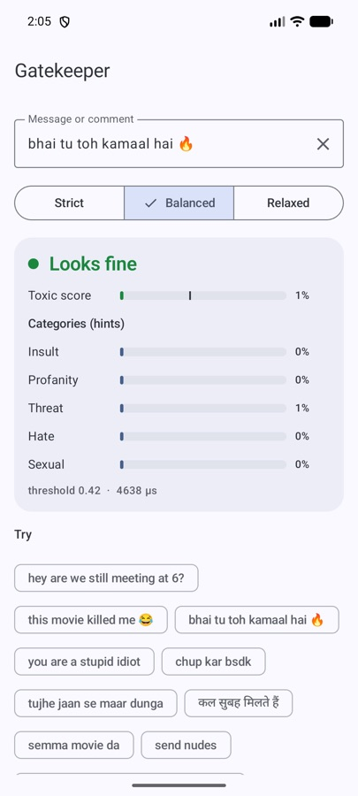
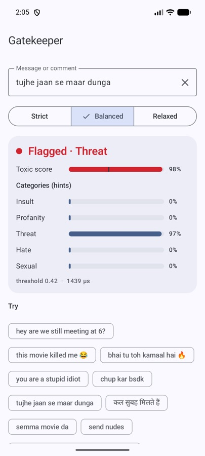
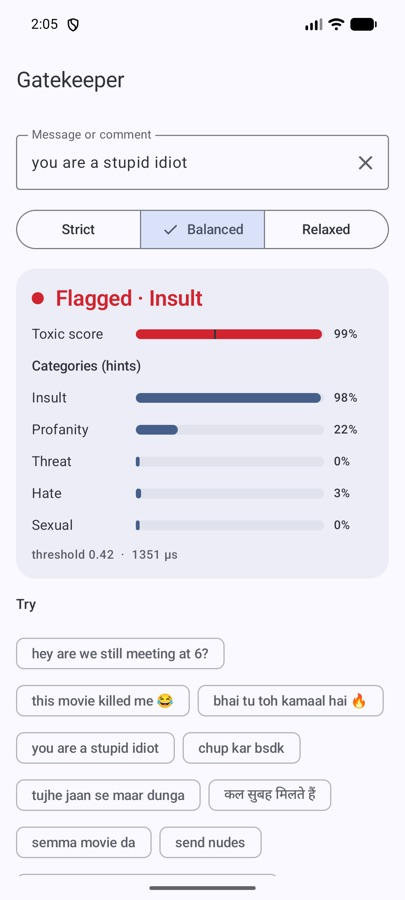

A toxicity filter playbook: 6 places to put Gatekeeper in your app
A toxicity model on its own does nothing. What matters is where you check, how strict you are there, and what happens next. Here is a playbook of six places, with the setting and code for each.

Before the plays: the three settings
Gatekeeper reads a message and returns a score from 0 to 1, a yes/no verdict and a hint about the category: insult, profanity, threat, hate or sexual. The verdict depends on how strict you ask it to be:
| Sensitivity | Threshold | Toxic caught | Normal chat flagged | Good for |
|---|---|---|---|---|
STRICT | 0.25 | ~85% | ~2–3% | kids' apps, sending to a human |
BALANCED | 0.42 | ~77% | ~1% | most apps (default) |
RELAXED | 0.70 | ~64% | ~0.6% | hiding things automatically |
The rule of thumb that falls out of this table: be strict when a human decides next, relaxed when the machine decides alone. Every play below follows it.
// build.gradle.kts
implementation("io.github.rajumark:gatekeeper:2.0.0")
val gatekeeper = Gatekeeper() // load once (~50 ms), off the main thread; check() is thread-safeThe six plays
1. The nudge before sending
Check the draft when the user taps send. If it's toxic, don't block — ask: “This might come across as hurtful. Send anyway?” The goal is a second thought, not censorship.
if (gatekeeper.isToxic(draft)) showRethinkDialog(draft) else send(draft)2. Blur on arrival
Incoming messages that score high get blurred with a “tap to show”. The receiver stays in control, and because it runs on their device, it works even in end-to-end encrypted chats where a server can't read anything.
val hidden = gatekeeper.check(message.text, Sensitivity.RELAXED).isToxic3. The moderator queue
For public content, flag generously and let a person look. Sort the queue by score so the worst is seen first. A 2–3% false-flag rate is fine when the cost of a false flag is one extra glance.
val v = gatekeeper.check(comment, Sensitivity.STRICT)
if (v.isToxic) moderationQueue.add(comment, priority = v.score)4. Kids' mode
With children, a missed insult is worse than a blocked joke. Use STRICT, and for threats specifically, don't just hide the message — surface it to whoever is responsible.
val v = gatekeeper.check(text, Sensitivity.STRICT)
if (v.isToxic && v.topCategory == Category.THREAT) notifyGuardian(text)5. Names and bios
A toxic group name is seen by everyone in the group. Check names and bios at the moment they're saved and ask for another one. It's short text, so it costs almost nothing.
6. Your own custom line
If none of the three presets fit, pass your own threshold. Take a few hundred real messages from your app, look at their scores, and pick the line where you're comfortable.
gatekeeper.check(message, threshold = 0.6f)
gatekeeper.score(message) // just the number, 0..1Why it's built for Indian chat
Most toxicity models are trained on English, and a little on other languages written in their own scripts. Indian chat is Hindi typed in Latin letters, mixed with English, with creative spelling. That's where a generic model falls over, and where Gatekeeper was trained to hold up:



| Gatekeeper | Multilingual BERT toxicity classifier | |
|---|---|---|
| Indian-language comments (hi, ta, te, ml, kn), F1 | 0.84 | 0.63 |
| Same comments in Latin letters, F1 | 0.83 | 0.65 |
| Everyday chat not flagged | 98.8% | 85.1% |
| 15 world languages, F1 | 0.77 | 0.91 |
| Hate-speech stress test (no slurs) | 45% | 61% |
| Size | 3.8 MB | 711 MB |
The 98.8% row matters more than it looks. A filter that flags one in seven normal messages (85.1%) trains users to ignore it. Slang like “this movie killed me 😂” should stay clean, and it does.
What not to do
- Don't auto-ban on one verdict. Gatekeeper is a strong, fast first filter, not a judge.
- Don't decide on the category alone. Categories are hints and most reliable in English. Decide on
isToxicorscore. - Don't expect it to catch polite hate. Hate against a group without slurs (“X are vermin”), sarcasm and some English idioms (“I hate mondays”) are its weak spots. Keep a report button.
The short version
Strict where a human reviews. Relaxed where the app acts alone. Balanced for everything in between. Run it on the device so it works in private chats too, and keep a person in the loop for anything that really matters.
The Hoverfly series. Eight small on-device models, one job each, all plain Kotlin Multiplatform with no native code. Each post is written differently, because each model taught me something different.
- Moji — emoji suggestions, told as a story
- Beacon — language detection, as a benchmark report
- Comma — punctuation restoration, as a step-by-step tutorial
- Comeback — smart replies, as an honest opinion piece
- Emotion — emotion detection, as questions and answers
- Gatekeeper — toxicity detection, as a practical playbook (you are here)
- Hideout — personal info hiding, as an audit checklist
- Chalk — doodle recognition, as an engineering deep dive